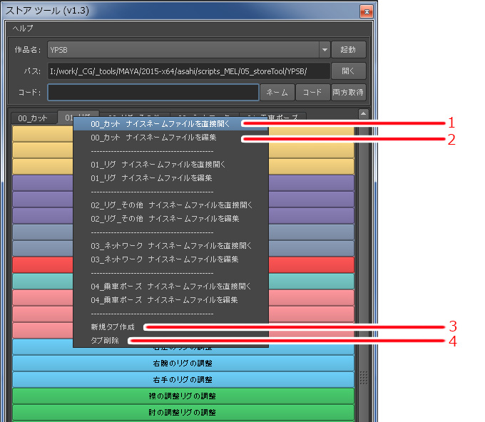

…melファイルやmelファイル保存フォルダを開きます。
…作品名を選択することができます。
…選択した作品に必要なツールを読み込み
…ツールのスクリプトファイルが格納されたフォルダまでのパスを表示します。
…パスに表示されたフォルダまでをエクスプローラで開きます
…読み込みボタン郡で読み込んだネームスペースまたはコードネームを表示します。
ネーム …選択したオブジェクト名のネームスペースを読み込み表示します。
コード …選択したオブジェクト名のネームスペースを除く最初のアンダーバーまでの文字列を読み込み表示します。
両方取得 …選択したオブジェクト名のネームスペースと最初のアンダーバーまでの文字列を読み込み表示します。
…パス直下にあるフォルダ名をカテゴリタブとして表示します。
パスに【I:\work\〜〜〜\YP\】と表示かつカテゴリタブに【Cut】【Anim】【Rend】と表示されている場合
パス直下に【Cut】【Anim】【Rend】の名前を持つフォルダがあるということを示しています。
I:\work\〜〜〜\YP\
Cut
Anim
Rend
…表示されているカテゴリタブと同じ名前を持つフォルダ直下にあるスクリプトファイルをボタンとして表示します。
カテゴリタブの上で右クリックするとポップアップメニューが表示されます。

…カテゴリタブと同じ名前のフォルダ直下にあるナイスネームファイル【_niceName.txt】を開きます。
…【_niceName.txt】を編集する【ナイスネームファイルの編集】ウインドウを表示します。
…新規カテゴリタブを作成する【新規タブ作成】ウインドウを表示します。
…カテゴリタブを削除する【タブ削除】ウインドウを表示します。
…melファイル名を指定します。
…ボタンの表示名（ラベル名）を指定します。
…ボタンの色を表示します。
右クリックのポップアップメニューで色情報のコピー＆ペーストが可能です。
…ラジオボタンがオンになっている項目を上または下に移動し順番を編集します。
…順番編集や削除対象を指定します。
…一番下に行を追加します。
…ラジオボタンで指定した項目を削除します。
…編集内容をナイスネームファイルに反映し、ストアツールを更新します。
同時にナイスネームファイルの編集ウインドウを閉じます。
…編集内容をナイスネームファイルに反映し、ストアツールを更新します。
…ナイスネームファイルの編集ウインドウを閉じます。
…ボタンの色情報をコピーします。
…ボタンの色情報をペーストします。
…新規で作成するタブの名前を入力します。
…新規でタブを作成します。
…新規タブ作成ウインドウを閉じます。
…タブのリストを表示します。
…タブのリストを更新します。
…リストで選択したタブ名を持つmelスクリプト格納フォルダごと削除します
※※※注意！！※※※
削除すると元に戻せませんのでご注意ください。
…タブ削除ウインドウを閉じます。